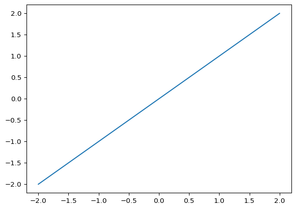

import numpy as np
a1 = np.array([4, 2, 1]) # a1 = array created from a "2D" list
print(f"a1 = {a1}")
a2 = np.zeros((3, 1)) # a2 = 3x1 array (row-vector) with zeros
print(f"a2 = {a2}")
a3 = np.ones((4, 2)) # a3 = 4x2 array filled with ones
print(f"a3 = {a3}")
a4 = np.eye(2) # a4 = 2x2 Identity matrix
print(f"a4 = {a4}")8 Arrays
8.1 Create Numpy arrays (Spring 2025)
Unlike lists, arrays have a fixed length of elements, and all elements must have the same type (the elements of the array can be changed). We will use the Numpy package for arrays, Numpy arrays are much faster to access than lists.
You can create Numpy arrays in various ways:
Perform the following tasks:
- Convert the list:
[1, 2, 3]to an array using thenp.array()method. - Create an \(3 \times 2\) array filled with zeros using
np.zeros(n, m), print the array. - Create an \(1 \times 5\) array filled with ones using
np.ones(n, m), print the array.
8.2 Access elements in Numpy arrays (Spring 2025)
Accessing elements of arrays is done in the same manner.
# Get the 1th element of the array
i = 0
element = a1[i]
print(f"The element with index {i} = {element}")The element with index 0 = 4Perform the following tasks:
- Create a \(3\times 3\) array and fill the last column with numbers 1, 2, 3
- Extract the first row using the colon operator similar to lists
- Print the diagonal numbers using a loop
8.3 Different ways to generate the x-values: with Numpy (Spring 2025)
Numpy is designed for numerical computations so it has built-in functions for the generation of coordinates within intervals ( see also https://numpy.org/doc/stable/user/how-to-partition.html#how-to-partition). Numpy functions arange() and linspace() create regularly spaced coordinates within 1D intervals:
import numpy as np
# Numpy: suppress scientific notation for small numbers and use 3 digits
np.set_printoptions(precision=3, suppress=True)
N = 10; A = -1; B = 2; dx = 0.25
x1 = np.arange(A, B, dx) # x1 = points in interval [A, B[ with step dx
print(f"x1 = {x1}")
x2 = np.linspace(A, B, N+1) # x2 = N points in interval [A, B]
print(f"x2 = {x2}")x1 = [-1. -0.75 -0.5 -0.25 0. 0.25 0.5 0.75 1. 1.25 1.5 1.75]
x2 = [-1. -0.7 -0.4 -0.1 0.2 0.5 0.8 1.1 1.4 1.7 2. ]The created coordinates are in Numpy arrays (not lists). Remember that Numpy arrays are much faster to access than lists.
- Create an array containing:
[1, 2, 3, 4, 5] - Create an array using
np.linspace(start, stop, step)with 20 elements equally spaced in the interval \([-2, 1]\) - Create an array using
np.arange(start, stop, step)with inter-element distance of 0.5 for the same interval \([-2, 1]\)
8.4 Element-wise operations with Numpy arrays (Spring 2025)
Numpy also provides element-wise operations on Numpy arrays. We can use this to generate for example y-coordinates:
# Numpy arrays provide element-wise operations
y = x1**2 # y contains squared array elements
print(f"y = {y}")
z = 5 * x1 + 3 # z contains elements of x multiplied by 5 and increased with 3
print(f"z = {z}")y = [1. 0.562 0.25 0.062 0. 0.062 0.25 0.562 1. 1.562 2.25 3.062]
z = [-2. -0.75 0.5 1.75 3. 4.25 5.5 6.75 8. 9.25 10.5 11.75]Numpy also provides functions on Numpy arrays:
res = np.exp(a1)
print(res)
a_degrees = np.array([45, 60, 30, 180, 90])
rads = np.deg2rad(a_degrees)
y = np.cos(rads)
print(y)[54.598 7.389 2.718]
[ 0.707 0.5 0.866 -1. 0. ]- Create x and y coordinates for the expressions (take as interval \([-2, 2]\)):
\[ \begin{aligned} y &= x^3\\ y &= \sin(\pi x)\\ y &= \sqrt(x + 2)\\ y &= \frac{\sin(\pi x)}{x}\\ \end{aligned} \]
8.5 Expressions with Numpy arrays
Import the Numpy library and/or functions and take \(x\) now an array in interval \([-2, 2]\).

Plot the following formulas:
\[ \begin{aligned} y & = x^2 \\ y & = \frac{\sin(\pi\, x)}{x+5\pi} + 1 \\ y & = x^3 - 4 x^2 + 2 \\ y & = \Re\{\sqrt{x}\} \\ \end{aligned} \]